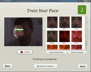

Gesichtserkennung
Archivierte Anleitung
Dieser Artikel wurde archiviert, da er - oder Teile daraus - nur noch unter einer älteren Ubuntu-Version nutzbar ist. Diese Anleitung wird vom Wiki-Team weder auf Richtigkeit überprüft noch anderweitig gepflegt. Zusätzlich wurde der Artikel für weitere Änderungen gesperrt.
Artikel für fortgeschrittene Anwender
Dieser Artikel erfordert mehr Erfahrung im Umgang mit Linux und ist daher nur für fortgeschrittene Benutzer gedacht.
Zum Verständnis dieses Artikels sind folgende Seiten hilfreich:
Pam-face-authentication  ist ein Projekt, welches die Authentifizierung mittels Webcam am PC ermöglicht. Es beinhaltet eine grafische Oberfläche zum Erfassen des Gesichtes, ein Programm zum Testen der hinterlegten Gesichtsbilder und ein PAM-Modul, welches sich in die Authentifizierungs-Infrastruktur des Rechners einbinden lässt.
ist ein Projekt, welches die Authentifizierung mittels Webcam am PC ermöglicht. Es beinhaltet eine grafische Oberfläche zum Erfassen des Gesichtes, ein Programm zum Testen der hinterlegten Gesichtsbilder und ein PAM-Modul, welches sich in die Authentifizierungs-Infrastruktur des Rechners einbinden lässt.
Laut einigen Nutzern ist es möglich, die Gesichtserkennung mit einem Foto zu umgehen! Die Gesichtserkennung kann u.a. Geschwister, die einem ähnlich sehen, Zugang zum PC gewähren!
|  | ||
| Programmstart | Fehler, keine Kamera gefunden | Facetrainer |
Installation¶
Installation aus den Paketquellen¶
PPA¶
Adresszeile zum Hinzufügen des PPAs:
ppa:antonio.chiurazzi/ppa
Hinweis!
Zusätzliche Fremdquellen können das System gefährden.
Ein PPA unterstützt nicht zwangsläufig alle Ubuntu-Versionen. Weitere Informationen sind der  PPA-Beschreibung des Eigentümers/Teams antonio.chiurazzi zu entnehmen.
PPA-Beschreibung des Eigentümers/Teams antonio.chiurazzi zu entnehmen.
Damit Pakete aus dem PPA genutzt werden können, müssen die Paketquellen neu eingelesen werden.
Folgendes Paket installieren:
pam-face-authentication (ppa)
 mit apturl
mit apturl
Paketliste zum Kopieren:
sudo apt-get install pam-face-authentication
sudo aptitude install pam-face-authentication
Selbst kompilieren¶
Pam-face-authentication muss von der Projekt-Homepage heruntergeladen werden.
Folgende Pakete müssen zusätzlich installiert [1] werden:
build-essential
cmake
qt4-qmake
libx11-dev
libcv-dev
libcvaux-dev
libhighgui4
libhighgui-dev
libqt4-dev
libpam0g-dev
kdebase-workspace-dev
checkinstall
mit apturl
Paketliste zum Kopieren:
sudo apt-get install build-essential cmake qt4-qmake libx11-dev libcv-dev libcvaux-dev libhighgui4 libhighgui-dev libqt4-dev libpam0g-dev kdebase-workspace-dev checkinstall
sudo aptitude install build-essential cmake qt4-qmake libx11-dev libcv-dev libcvaux-dev libhighgui4 libhighgui-dev libqt4-dev libpam0g-dev kdebase-workspace-dev checkinstall
Hinweis!
Fremdpakete können das System gefährden.
Jetzt lädt man sich das Archiv pam-face-authentication-x.x.tar.gz von der Downloadseite  herunter, entpackt [2] und kompiliert [3] diese. Dabei kommt cmake zum Einsatz, daher muss zunächst ein build-Verzeichnis angelegt werden, in dem der cmake-Befehl [4] ausgeführt wird:
herunter, entpackt [2] und kompiliert [3] diese. Dabei kommt cmake zum Einsatz, daher muss zunächst ein build-Verzeichnis angelegt werden, in dem der cmake-Befehl [4] ausgeführt wird:
mkdir build && cd build cmake -D CMAKE_INSTALL_PREFIX=/usr .. make sudo checkinstall --pkgname=pam-authentication-face-auth
Falls man KDE verwendet, braucht man noch zusätzlich die Datei kdm-plugin-pam-face-authentication-x.x.tar.gz, die ebenfalls von der Downloadseite bezogen werden kann. Die derzeitige Version funktioniert aber nur mit KDE 4.4. Das Installationsverfahren ist das selbe wie beschrieben, als cmake-Befehl wird
cmake -D CMAKE_INSTALL_PREFIX=/usr/kde/4 .. make sudo checkinstall --pkgname=pam-authentication-face-auth
verwendet.
Einrichtung¶
PPA¶
Nach der Installation ruft man der Trainer über das Startmenü auf. Damit die Gesichtserkennung gut funktioniert, sollte man ruhig mehrere Trainingsdurchläufe hinterlegen. Beim Trainingsdurchlauf das Gesicht möglichst ruhig halten, da pro Durchlauf 13 Bilder aufgenommen werden. Über die Einstellungen kann die Genauigkeit der Erkennung eingestellt werden. Es empfiehlt sich hier auch, die Erkennung zu testen, damit man sich nicht hinterher ausgesperrt hat.
Weiterhin muss noch eine Datei erstellt werden.
Dazu wird in einem Editor mit Root-Rechen [5] die Datei /usr/share/pam-configs/face_authentication mit folgendem Inhalt erstellt:
Name: face_authentication profile Default: yes Priority: 900 Auth-Type: Primary Auth: [success=end default=ignore] pam_face_authentication.so enableX
Mit dem folgenden Kommando wird das eben erstellte Plugin aktiviert, bzw. deaktiviert.
sudo pam-auth-update --package face_authentication
Ab jetzt ist das Einloggen ohne Passwort möglich.
Einrichtung für selbst kompilierte Version¶
Nach der Installation kann man nun mit dem Trainieren der Gesichtserkennung beginnen.
Man ruft den Trainer entweder im Terminal auf [6] (qt-facetrainer) oder legt sich einen entsprechenden Starter [7] dafür an.
Damit die Gesichtserkennung gut funktioniert, sollte man ruhig mehrere Trainingsdurchläufe hinterlegen. Beim Trainingsdurchlauf das Gesicht möglichst ruhig halten, da pro Durchlauf 13 Bilder aufgenommen werden. Über die Einstellungen kann die Genauigkeit der Erkennung eingestellt werden. Es empfiehlt sich hier auch die Erkennung zu testen, damit man sich nicht hinterher ausgesperrt hat.
Einrichtung unter Gnome¶
Nun muss Gnome für die Gesichtserkennung eingerichtet werden [8].
sudo sed -i '1i auth sufficient pam_face_authentication.so enableX' /etc/pam.d/gdm sudo sed -i '1i auth sufficient pam_face_authentication.so enableX' /etc/pam.d/gnome-screensaver
Nach Abmeldung steht die Gesichtserkennung auch schon am Anmeldebildschirm zur Verfügung.
Einrichtung unter KDE¶
Hierfür editiert man die Datei /etc/kde4/kdm/kdmrc in einem Editor [4] mit Root-Rechten [8] und fügt folgende Zeile unter dem Reiter "[X-*-Greeter]" hinzu
PluginsLogin=classic, faceauthenticate ## hier wird zuerst der Login mit Passwort gestartet
oder
PluginsLogin=faceauthenticate, classic ## hier wird zuerst der Login per Gesichtserkennung gestartet
Da die Installationsroutine des KDM - Greeter die Datei kgreet_faceauthenticate.so in das Verzeichnis /usr/kde/4/lib/kde4/ gelegt hat, wird sie unter Ubuntu leider nicht gefunden. Deshalb muss sie kopiert werden
sudo cp /usr/kde/4/lib/kde4/kgreet_faceauthenticate.so /usr/lib/kde4/
Nun wird noch mit einem Editor [4] mit Root-Rechten [8] eine neue Datei angelegt /etc/pam.d/kdm-faceauthenticate, mit folgendem Inhalt
#%PAM-1.0 auth sufficient pam_face_authentication.so @include common-account @include common-password @include common-session session optional pam_console.so session optional pam_polkit_console.so
- Erstellt mit Inyoka
-
 2004 – 2017 ubuntuusers.de • Einige Rechte vorbehalten
2004 – 2017 ubuntuusers.de • Einige Rechte vorbehalten
Lizenz • Kontakt • Datenschutz • Impressum • Serverstatus -
Serverhousing gespendet von